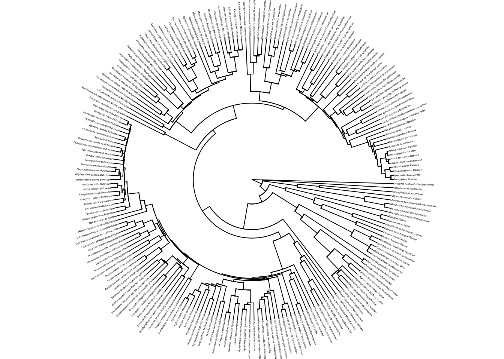

Chapter 4 Preparing your tree and data for PCMs in R
Before we do any analysis in R we will generally need to clean and tidy our data. Data cleaning involves looking for errors, for example we might need to remove duplicate columns, or correct typos in species names, or make sure column headers are all unique and easy enough for us to type in R. We also often need to tidy our data. For data to be tidy:
- Each variable must have its own column.
- Each observation must have its own row.
- Each value must have its own cell.
The R packages dplyr, tidyr are great for data cleaning and tidying. See https://r4ds.had.co.nz/tidy-data.html for more details on what tidy data is and how to do this in R. Of course you are welcome to do this in Excel or another package if you’re more comfortable with that. The important thing is that when you begin your analyses, your data are in a suitable format. Note that a detailed introduction to data manipulation in R is beyond the scope of this Primer, but if in doubt about your data, try and make it look as much like our example datasets as possible. If you can do that, these R analyses should work for you! :)
In this exercise we will take an existing tree and some data and prepare them for a PCM analysis. Note that prior to this step, it is important that your data is in a tidy format, and has been thoroughly checked for errors. The exercise below only shows you how to deal with additional issues caused by using trees and then matching species data to those trees. We assume the tree and data themselves are fit for purpose.
We will be using the evolution of eye size in frogs as an example. The data and modified tree come from K. N. Thomas et al. (2020), and the original tree comes from Feng et al. (2017). I’ve removed a few species and a few variables to make things a bit more straightforward. If you want to see the full results check out K. N. Thomas et al. (2020)!
Before you start
- Open the
04-Preparation.RProjfile in the04-Preparationfolder to open your R Project for this exercise.
You will also need to install the following packages:
tidyverse- for reading, manipulating and plotting dataape- functions for reading, plotting and manipulating phylogeniesgeiger- to check species in the tree and data matchphytools- for force.ultrametric
4.2 Reading and checking your phylogeny in R
We already learned how to do these things in 03-Phylogenies. If you haven’t looked at that exercise I suggest you check it out before doing the steps below.
First let’s read in the tree and look at its structure:
# Read in the tree
frogtree <- read.nexus("data/frog-tree.nex")
# Look at the tree summary
frogtree##
## Phylogenetic tree with 214 tips and 213 internal nodes.
##
## Tip labels:
## Ascaphus_truei_Ascaphidae, Leiopelma_hochstetteri_Leiopelmatidae, Alytes_obstetricans_Alytidae, Discoglossus_pictus_Alytidae, Barbourula_busuangensis_Bombinatoridae, Bombina_orientalis_Bombinatoridae, ...
##
## Rooted; includes branch lengths.It’s usually a good idea to quickly plot the tree too…
# Plot the tree as a circular/fan phylogeny with small labels
plot(frogtree, cex = 0.2, typ = "fan", no.margin = TRUE)
frogtree is a fully resolved tree with branch lengths. There are 214 species and 213 internal nodes. Note that the species names at the tips also have family names added to them…
# Look at the first 5 tip labels
frogtree$tip.label[1:5]## [1] "Ascaphus_truei_Ascaphidae" "Leiopelma_hochstetteri_Leiopelmatidae"
## [3] "Alytes_obstetricans_Alytidae" "Discoglossus_pictus_Alytidae"
## [5] "Barbourula_busuangensis_Bombinatoridae"Most trees will have just the genus and species names, but some will have additional information like here, or numbering etc. This is not a problem as long as the names match those in your data (see below).
Most R functions require your tree to be dichotomous, i.e. to have no polytomies. To check whether your tree is dichotomous use is.binary.
# Check whether the tree is binary
# We want this to be TRUE
is.binary(frogtree) ## [1] TRUEIf this was FALSE, we’d use multi2di to make the tree dichotomous, but here it is TRUE so we can leave it as it is.
Most functions also require the tree to be rooted, i.e., to have one taxon designated as the outgroup. We can check whether the tree is rooted as follows.
# Check whether the tree is rooted
# We want this to be TRUE
is.rooted(frogtree)## [1] TRUEOur tree is rooted so it’s ready to go.
Finally we might want to check that the tree is ultrametric. Most functions will assume this, and although we can see the tree looks ultrametric when we plotted it above, we should still check.
# Check the tree is ultrametric
is.ultrametric(frogtree)## [1] TRUEIf this is FALSE there are two options. If the tree really is non-ultrametric, for example if it contains fossil species, then we can’t use it in methods that require an ultrametric tree. However, there are cases (the dragonfly tree in Chapter 11 is one example) where the tree is non-ultrametric due to a rounding error. In the latter case we can use the phytools function force.ultrametric to fix this.
When can a tree that looks ultrametric appear to be
non-ultrametric? Most of the methods we use expect trees to be
ultrametric, i.e. that all the tips line up, generally at the present
day (time 0). Sometimes (see Chapter 11 the tree and it looks
ultrametric, but when we check using is.ultrametric the
answer returned is FALSE. What is going on? The tree is
actually ultrametric, and will run in most analyses with R treating it
as an ultrametric tree. The reason is.ultrametric tells us
it is not ultrametric is related to rounding errors. When you save a
tree file, it will save the branch lengths to a certain level of
accuracy, but not always the full level of accuracy if your branch
lengths have lots and lots of decimal places. When you read these trees
back into R, a teeny tiny bit of the accuracy is lost which sometimes
means that when R adds up the root-to-tip distances for each tip, they
aren’t all exactly the same length, so therefore technically the tree is
not ultrametric. For most implementations this tiny difference is not a
big deal. A quick fix to this problem is to use the function
force.ultrametric which essentially fudges the numbers to
force the tree to be ultrametric. If your tree is genuinely
non-ultrametric you should not use this function as it can
introduce negative branch lengths which will break most functions you
might want to use in R.
4.3 Reading the data into R
The data are in a comma-delimited text file called frog-eyes.csv. Load these data as follows.
# Read in the data
frogdata <- read_csv("data/frog-eyes.csv")Check everything loaded correctly:
# Look at the data
glimpse(frogdata)## Rows: 215
## Columns: 11
## $ Binomial <chr> "Allophryne_ruthveni", "Eupsophus_roseus", "Alytes_obstetricans", "…
## $ Family <chr> "Allophrynidae", "Alsodidae", "Alytidae", "Alytidae", "Aromobatidae…
## $ Genus <chr> "Allophryne", "Eupsophus", "Alytes", "Discoglossus", "Allobates", "…
## $ tiplabel <chr> "Allophryne_ruthveni_Allophrynidae", "Eupsophus_roseus_Alsodidae", …
## $ Adult_habitat <chr> "Scansorial", "Ground-dwelling", "Ground-dwelling", "Ground-dwellin…
## $ Life_history <chr> "Free-living larvae", "Free-living larvae", "Free-living larvae", "…
## $ Sex_dichromatism <chr> "Absent", "Absent", "Absent", "Absent", "Absent", "Absent", "Absent…
## $ SVL <dbl> 23.76667, 38.37500, 37.46667, 62.64000, 25.60000, 27.03333, 38.4000…
## $ mass <dbl> 1.0000000, 7.5000000, 6.6666667, 24.4000000, 2.1000000, 2.4666667, …
## $ rootmass <dbl> 0.9917748, 1.9273451, 1.8690601, 2.8885465, 1.2549697, 1.3507613, 1…
## $ eyesize <dbl> 3.200000, 5.362500, 6.366667, 7.550000, 4.116667, 3.783333, 4.75000…As you can see, the data contains 215 species, and the following 11 variables:
Binomial- the species binomial name.
Family- the family the species belongs to.
Genus- the genus the species belongs to.
tiplabel- the name used for the species in the phylogeny.
Adult_habitat- habitat of adults. Categories are: Ground-dwelling, Subfossorial, Scansorial (i.e. tree-dwelling), Semiaquatic, Aquatic, or Fossorial (i.e. burrowers).
Life_history- whether the larvae are free-living (Free-living larvae) or not (No free-living larvae).
Sex_dichromatism- whether different sexes are different colours (Present) or not (Absent).SVL- snout vent length (in mm). This is a common way to measure body size in amphibians.
mass- body mass (in g).rootmass- cube root of the body mass.
eyesize- eye size (in mm) for the species. This is an everage across left and right eyes from three individuals per species.
Note that in some comparative datasets (most of mine for instance)
the species names column (here Binomial) also contains the
names of the species in the tree so we would match up that column to the
species names in the tree (see below). In this dataset and others, the
authors have instead included the names of the tips of the tree as a
separate column (here tiplabel). This is often done when
the tips of the tree are not species names, but are instead some kind of
code. This is common where the tree contains multiple tips for one
species, or where the tip labels contain additional information (here
they include family names). A final approach used by some authors is to
have the species names as the row names of the dataset. Any approach is
fine, but make sure you know which column contains the names that should
match up with the tree.
4.4 Matching your data to your phylogeny
Now we have the tree and the data in R, we need to match the two up if we want to perform any kind of PCM analyses. Below are some common issues you might encounter, and how to fix them.
4.4.1 Species names with spaces
Species names in phylogenies are generally written as Genus_species (the gap between the genus name and species name is replaced by an underscore _). If the species names in the data are written as Genus species with a space, then you will have to replace the spaces with _ so that they match up with the species names in the tree. You can do this as follows using str_replace.
We don’t need to do this in our frog data, but if we did we could use code like this:
# Replace spaces with underscores in species names
frogdata <-
frogdata %>%
mutate(Binomial = str_replace(string = Binomial, pattern = " ", replacement = "_"))
# Check it worked
head(frogdata$Binomial)
Beware trailing spaces! If you’re trying to match up species names
and are having some trouble, check what happened when you replaced
spaces with underscores (_). Sometimes we accidentally
leave extra spaces when typing, and R will convert these to underscores
too which can cause problems. For example, Genus_species
can become Genus_species_ if you accidentally left a
trailing space. Check all the names in your dataset after replacing the
spaces to make sure this is not a problem.
4.4.2 Mismatches between species in your data and phylogeny
Often you will have data for species which are not in your phylogeny and/or species in your phylogeny which are not in your data. Many functions in R can deal with this and will match the species for you, others will produce an error telling you the tree and data do not match (e.g. most ape functions).
Even in functions that can cope with this, it’s useful to match up the species before your analyses. This can help you identify things like spelling mistakes or variations in the taxonomy of the tree and the data.
If you have even slightly misspelled a species name in the tree or the data it will automatically be dropped from the analyses. It is therefore very important to check this before running an analysis, especially one with lots of taxa.
We can use the geiger function name.check to find out which names do not match. Remember that the species names that match up with the tree from frogdata are in the variable called tiplabel.
# Check whether the names match in the data and the tree
check <- name.check(phy = frogtree, data = frogdata,
data.names = frogdata$tiplabel)The output of check has two parts, tree_not_data for species in the tree but not in the dataset, and data_not_tree for species in the dataset but not in the tree. You need to look at both of these in turn.
# Look at species in the tree but not the data
check$tree_not_data## [1] "Incilius_nebulifer_Bufonidae" "Leptobrachella_bidoupensis_Megophryidae"
## [3] "Microhyla_fissipes_Microhylidae" "Microhyla_marmorata_Microhylidae"There are four species in the tree and not the data. We were expecting this here, so no worries.
For your analyses you should always check this list carefully. If I were running this analysis for the first time I’d want to check that these species really weren’t in my data. Maybe they are misspelled in the data? If so correct this now. Maybe the species name has changed? If so change this now. It doesn’t really matter whether you make the change in the tree or the data, but make sure anything that should match up, does. I’d usually fix issues in the dataset in Excel or another spreadsheet program, unless it’s a blatant typo in the tree.
Next check the species in the data but not the tree.
# Look at species in the data but not the tree
check$data_not_tree## [1] "Gastrophryne_carolinensis_Microhylidae" "Leptobrachella_dringi_Megophryidae"
## [3] "Megophrys_gerti_Megophryidae" "Microhyla_pulverata_Microhylidae"
## [5] "Oreobates_quixensis_Strabomantidae"This gives us five species in the data but not in the tree. As above, make sure to correct any errors before moving to the next step. Make sure anything that should match up, does match up.
Here we know that these species are missing from our data, so we don’t need to worry.
4.4.3 Matching the tree and the data
Finally, once we know which species do not match up, we need to remove species missing from the data from the tree, and remove species missing from the tree from the data.
We can remove species missing from the tree easily using drop.tip.
You need to list the species which you do not want to select and then drop them from the tree instead of selecting the species you do want.
mytree <- drop.tip(frogtree, check$tree_not_data)To remove species from the data which are not in the tree you can use match and subset as follows:
matches <- match(frogdata$tiplabel, check$data_not_tree, nomatch = 0)
mydata <- subset(frogdata, matches == 0)== means equals.
So this line of code selects species which do appear in the data_not_tree list of species, i.e. their value from matches is 0.
Always check this has worked as expected by checking the data and the phylogeny.
In the first instance you can just use str to make sure you have the expected number of species in each:
str(mytree)## List of 4
## $ edge : int [1:418, 1:2] 211 212 213 214 215 216 217 218 219 220 ...
## $ edge.length: num [1:418] 0.166 0.114 0.102 0.4 0.133 ...
## $ Nnode : int 209
## $ tip.label : chr [1:210] "Ascaphus_truei_Ascaphidae" "Leiopelma_hochstetteri_Leiopelmatidae" "Alytes_obstetricans_Alytidae" "Discoglossus_pictus_Alytidae" ...
## - attr(*, "class")= chr "phylo"
## - attr(*, "order")= chr "cladewise"The matched phylogeny has 210 species in it (instead of the original 214 species in because the four that weren’t in the data have been removed).
glimpse(mydata)## Rows: 210
## Columns: 11
## $ Binomial <chr> "Allophryne_ruthveni", "Eupsophus_roseus", "Alytes_obstetricans", "…
## $ Family <chr> "Allophrynidae", "Alsodidae", "Alytidae", "Alytidae", "Aromobatidae…
## $ Genus <chr> "Allophryne", "Eupsophus", "Alytes", "Discoglossus", "Allobates", "…
## $ tiplabel <chr> "Allophryne_ruthveni_Allophrynidae", "Eupsophus_roseus_Alsodidae", …
## $ Adult_habitat <chr> "Scansorial", "Ground-dwelling", "Ground-dwelling", "Ground-dwellin…
## $ Life_history <chr> "Free-living larvae", "Free-living larvae", "Free-living larvae", "…
## $ Sex_dichromatism <chr> "Absent", "Absent", "Absent", "Absent", "Absent", "Absent", "Absent…
## $ SVL <dbl> 23.76667, 38.37500, 37.46667, 62.64000, 25.60000, 27.03333, 38.4000…
## $ mass <dbl> 1.0000000, 7.5000000, 6.6666667, 24.4000000, 2.1000000, 2.4666667, …
## $ rootmass <dbl> 0.9917748, 1.9273451, 1.8690601, 2.8885465, 1.2549697, 1.3507613, 1…
## $ eyesize <dbl> 3.200000, 5.362500, 6.366667, 7.550000, 4.116667, 3.783333, 4.75000…We now have 210 species in the dataset too, great!
One final check to make is to check what type of dataset R thinks mydata is. We can do that using the function class
class(mydata)## [1] "tbl_df" "tbl" "data.frame"Interestingly mydata is a tbl_df, tbl and data.frame. This is a data type created by functions in the tidyverse called a tibble. Tibbles have all sorts of useful properties (and a cute name!) but they’re also a pain as many functions don’t recognise that they contain a data frame and will not work on tibbles. We can fix this very easily though, just force R to make mydata into a data frame as follows:
# Convert to a data frame
mydata <- as.data.frame(mydata)
# Check this is now a data frame
class(mydata)## [1] "data.frame"Finally, we might want to output these cleaned and tidied data and tree to our folder so rather than doing this every time we start an analysis, we can just use these tidy versions. To do this we can use:
# Write the cleaned data to a new file
write_csv(mydata, path = "data/clean-frog-data.csv")
# Write the cleaned tree to a new file
write.nexus(mytree, file = "data/clean-frog-tree.nex")Note, however, that you will have to repeat this preparation process if you add species or data to your tree or dataset at a later date.
4.4.4 NAs in your data
When running analyses we can only use species that have a value for each of the variables in the model. In comparative analyses it’s common to have missing data, recorded as NA (not applicable) in our .csv files and in R. It can therefore be useful to subset your data so that you have a complete set of variables for certain analyses. For example let’s see how many “NAs” there are in each of our variables (don’t worry too much about this code if it seems confusing to you!):
mydata %>%
dplyr::select(everything()) %>%
summarise_all(list(~ sum(is.na(.))))## Binomial Family Genus tiplabel Adult_habitat Life_history Sex_dichromatism SVL mass
## 1 0 0 0 0 0 22 36 0 0
## rootmass eyesize
## 1 0 022 species don’t have a value for Life_history, and 36 species don’t have a value for Sex_dichromatism. Many PCMs will just ignore NA values, but if you needed to remove these you could subset them out as follows, leaving only the 163 species with complete data.
# Subset out the species with NA values for some variables
frog_noNA <- filter(mydata,
!is.na(Life_history) & !is.na(Sex_dichromatism))
# Look at the data
glimpse(frog_noNA)## Rows: 163
## Columns: 11
## $ Binomial <chr> "Allophryne_ruthveni", "Eupsophus_roseus", "Alytes_obstetricans", "…
## $ Family <chr> "Allophrynidae", "Alsodidae", "Alytidae", "Alytidae", "Aromobatidae…
## $ Genus <chr> "Allophryne", "Eupsophus", "Alytes", "Discoglossus", "Allobates", "…
## $ tiplabel <chr> "Allophryne_ruthveni_Allophrynidae", "Eupsophus_roseus_Alsodidae", …
## $ Adult_habitat <chr> "Scansorial", "Ground-dwelling", "Ground-dwelling", "Ground-dwellin…
## $ Life_history <chr> "Free-living larvae", "Free-living larvae", "Free-living larvae", "…
## $ Sex_dichromatism <chr> "Absent", "Absent", "Absent", "Absent", "Absent", "Absent", "Absent…
## $ SVL <dbl> 23.76667, 38.37500, 37.46667, 62.64000, 25.60000, 27.03333, 38.4000…
## $ mass <dbl> 1.0000000, 7.5000000, 6.6666667, 24.4000000, 2.1000000, 2.4666667, …
## $ rootmass <dbl> 0.9917748, 1.9273451, 1.8690601, 2.8885465, 1.2549697, 1.3507613, 1…
## $ eyesize <dbl> 3.200000, 5.362500, 6.366667, 7.550000, 4.116667, 3.783333, 4.75000…4.5 Quick template code
To help you do this with your own data, I’ve condensed the above into one script below so you don’t forget any of the steps.
# Load packages
library(ape)
library(geiger)
library(tidyverse)
# Read in the tree
frogtree <- read.nexus("data/frog-tree.nex")
# Look at the tree summary
str(frogtree)
# Plot the tree as a circular/fan phylogeny with small labels
plot(frogtree, cex = 0.2, typ = "fan", no.margin = TRUE)
# Check whether the tree is binary
# We want this to be TRUE
is.binary(frogtree)
# Check whether the tree is rooted
# We want this to be TRUE
is.rooted(frogtree)
# Check whether the tree is ultrametric
# We want this to be TRUE
is.ultrametric(frogtree)
# Read in the data
frogdata <- read_csv("data/frog-eyes.csv")
# Look at the data
glimpse(frogdata)
# Check whether the names match in the data and the tree
check <- name.check(phy = frogtree, data = frogdata,
data.names = frogdata$tiplabel)
# Look at check
check
### Correct any typos/taxonomic errors in the tree or data ###
# Remove species missing from the data
mytree <- drop.tip(frogtree, check$tree_not_data)
# Remove species missing from the tree
matches <- match(frogdata$tiplabel, check$data_not_tree, nomatch = 0)
mydata <- subset(frogdata, matches == 0)
# Look at the tree summary
str(mytree)
# Look at the data
glimpse(mydata)
## OPTIONAL
# Make any required subsets of the tree/data
## OPTIONAL
# Write the cleaned data to a new file
write_csv(mydata, path = "data/clean-frog-data.csv")
# Write the cleaned tree to a new file
write.nexus(mytree, file = "data/clean-frog-tree.nex")4.7 Practical exercise
In the data folder there is another tree (primate-tree.nex) and dataset (primate-data.csv) for investigating the evolution of primate life-history variables. These data come from the PanTHERIA database (Jones et al. 2009) and 10kTrees (Arnold, Matthews, and Nunn 2010).
Read in the tree and data then prepare them for a PCM analysis.